Discover Our Destinations
Explore Venezuela's most iconic natural wonders
Angel Falls
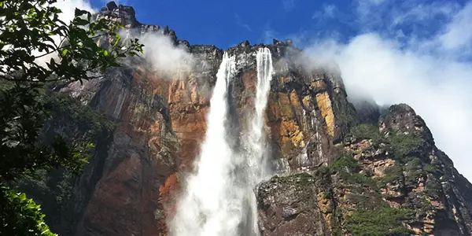
- Location: Canaima National Park, Bolívar State, in the Gran Sabana region.
- Altitude: 979 meters (3,212 feet) total height, with an uninterrupted plunge of 807 meters (2,648 feet).
- Best time to visit: From May to November (the rainy season), when the water flow is at its most spectacular.
- Activities: Scenic flights over the tepuis, boat trips along the Churún River, hiking to the base of the falls, and visiting indigenous Pemon communities.
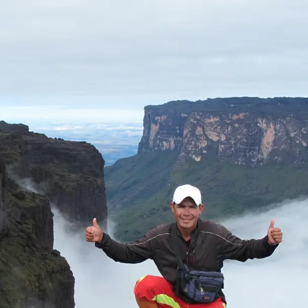
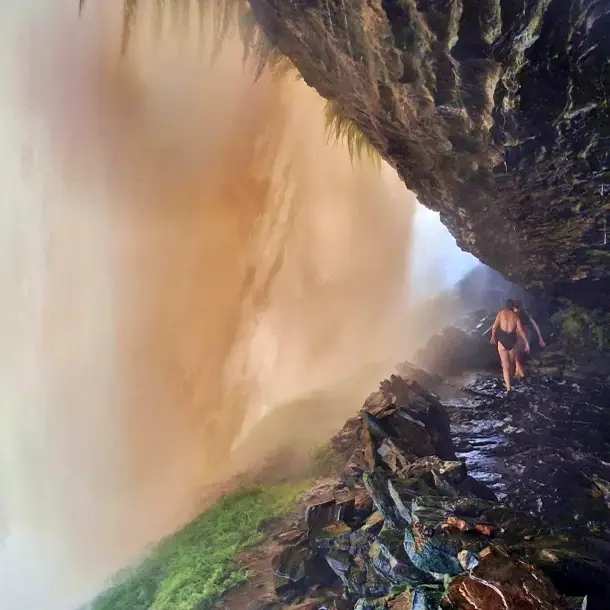
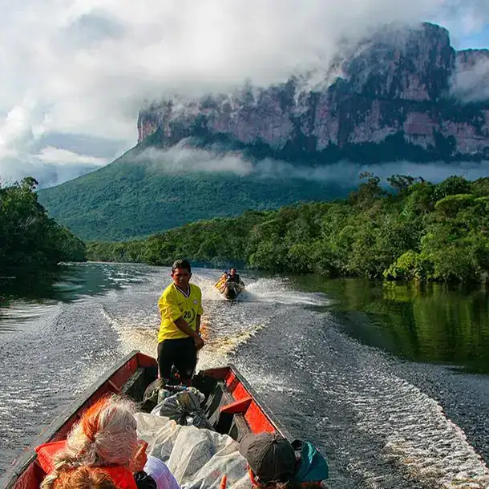
Los Roques Archipelago
- Location: Caribbean Sea, approximately 128 km (80 miles) north of La Guaira, Venezuela.
- Surface Area: 221,120 hectares. It is one of the largest marine parks in the Caribbean.
- Best time to visit: December to April (dry season), when seas are calmer and visibility for snorkeling is optimal.
- Activities: Snorkeling, scuba diving, kite surfing, wind surfing, sport fishing, and island hopping between the 42 coral cays.
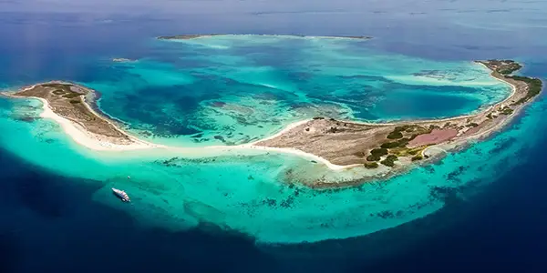
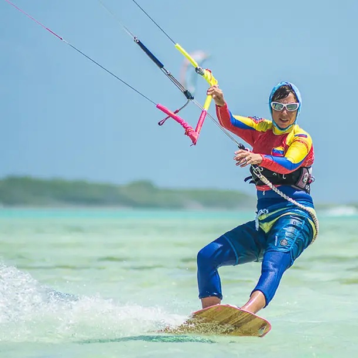
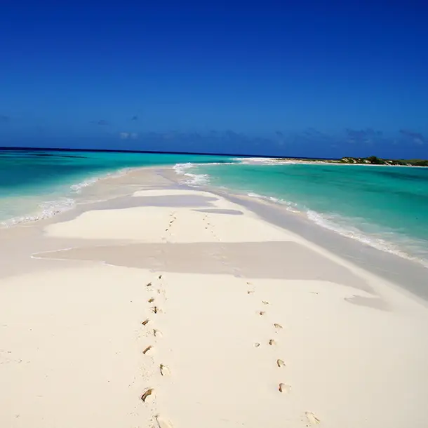
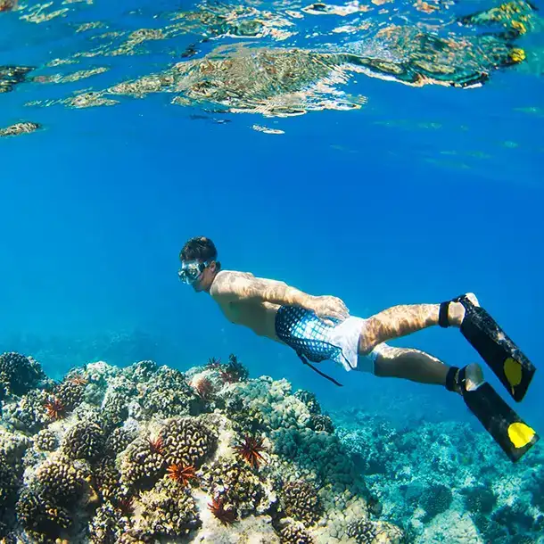
The Coro Dunes
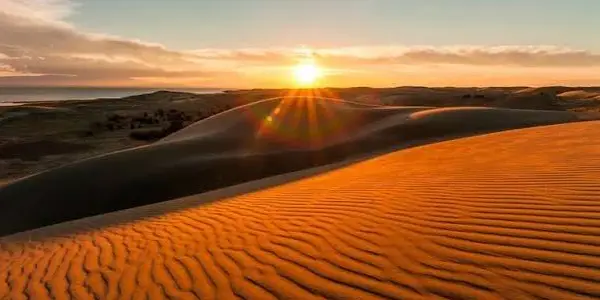
- Location: Falcón State, Venezuela, located just minutes from the historic city of Santa Ana de Coro, within the Médanos de Coro National Park.
- Altitude: 91,280 hectares (912.8 km² or 352 sq mi), making it one of the most extensive and impressive dune fields in South America.
- December to April (dry season), when the sand is dry and firm, providing ideal conditions for outdoor activities, clear skies, and spectacular sunset photography.
- Sandboarding, 4x4 dune buggy or ATV tours, camel rides, landscape photography, and exploring the nearby UNESCO World Heritage colonial city of Coro.
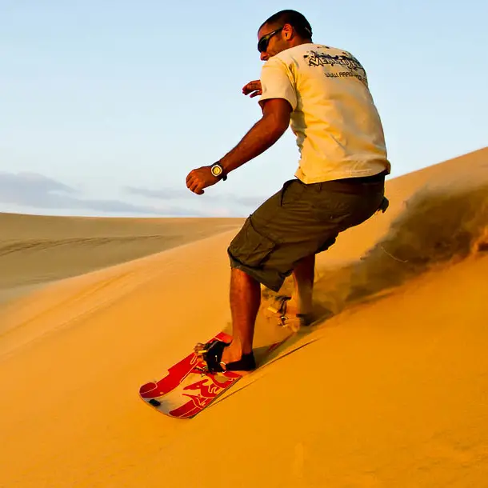
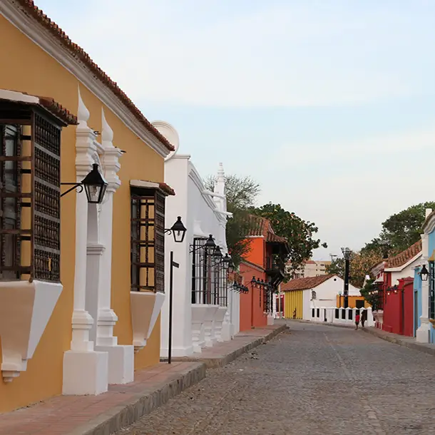
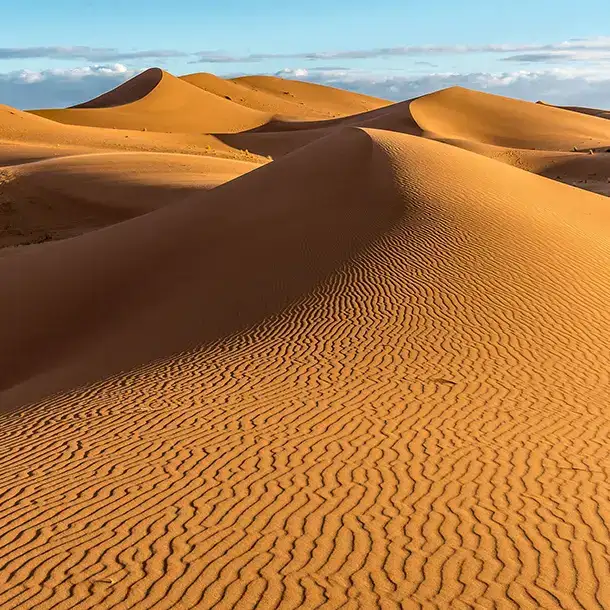